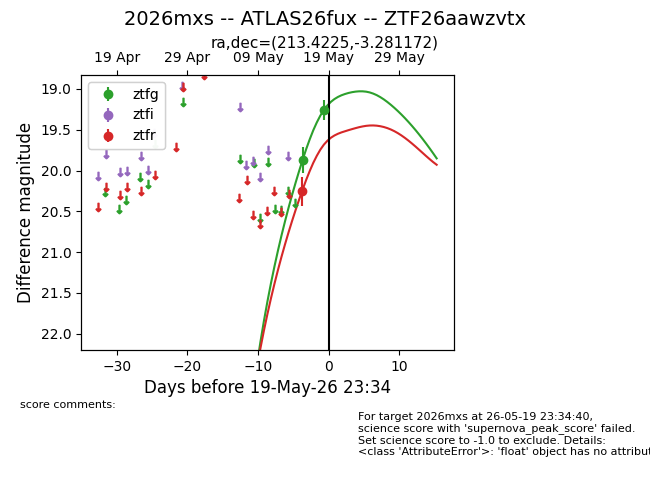
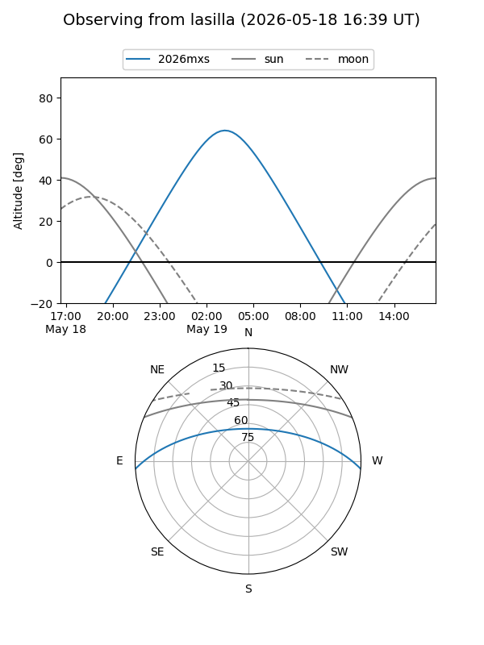
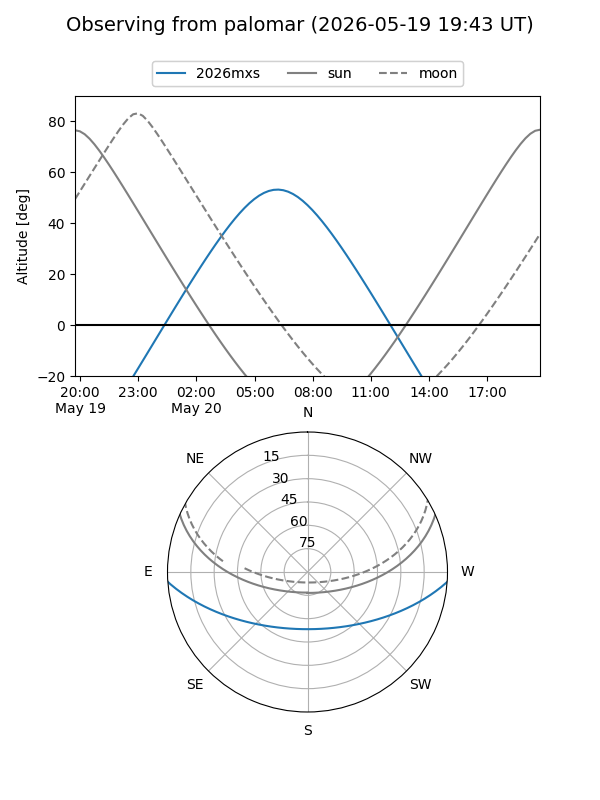
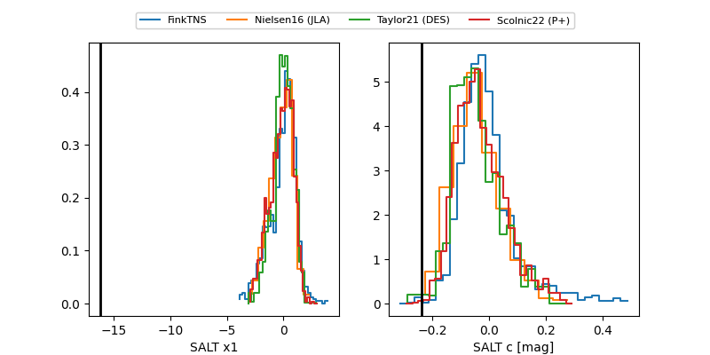

2026mxs
Target 2026mxs at 2026-05-19 23:36
Aliases and brokers:
FINK: link
Lasair: link
ALeRCE: link
TNS: link
YSE: link
alt names
ZTF26aawzvtx (ztf,fink_ztf)
2026mxs (tns,yse)
ATLAS26fux (atlas)
Coordinates:
equatorial (ra, dec) = 213.4225,-3.28117
equatorial (HMS+DMS) = 14:13:41.40,-03:16:52.22
galactic (l, b) = (339.2432,+53.68943)
Flags:
Photometry:
last ztfg=19.26, ztfr=20.25
2 ztfg, 1 ztfr detections
Lightcurve

Visibility


Additional plots
